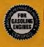
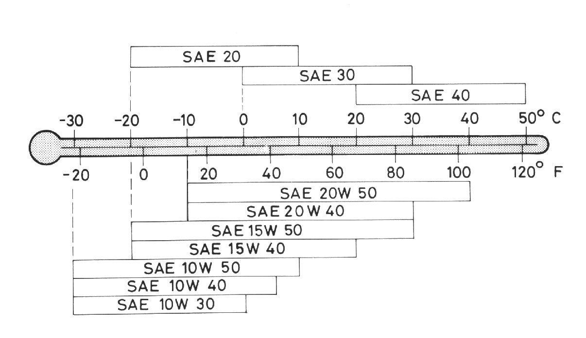
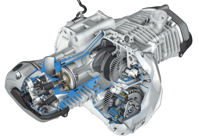
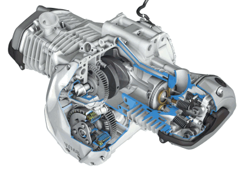

"And thou shalt make it an oil of holy ointment,
an ointment compound after the art of the apothecary."
Exodus 30:25
¶ No, I don't think Moses was meaning engine oil. But to me, "an ointment compound after the art of the apothecary." sure describes oil. Apothecary means perfumer, and to me oil is perfume. I am not alone in this opinion. Soichiro Honda, founder of Honda Motorcycles, said of his first encounter with a car (leaking oil) "I was literally intoxicated by the smell of that oil." That sweet smelling mixture has been really changing lately. Here are some things to consider when oil change time rolls around.
There are two styles or types of oiling to consider here. Some engines have the engine oil separate from the transmission and/or clutch oil. Air cooled BMW Boxer twins are an example. Your engine oil will last a bit longer if it is only lubing the engine. Meshing gears break down the oil quicker than spinning bearings and the clutch adds its own contaminates too. Most Japanese bikes have common engine/trans oil systems. So if your engine oil also lubricates the transmission and clutch... change the oil every 1000 miles. If it just lubes the engine you can go a bit longer. Lots of clean fresh oil will make an engine last a long time. I see very few oil related failures. What I do see a lot of is LACK of oil failures. Check the oil every time you start the engine. No fool'n... every time... without fail... always.
While you are at it oil your rear chain too... EVERY TIME YOU RIDE.
Now you ask what type of oil? I have never been a big fan of the motorcycle specific oils. They cost a lot of money and the only tests I've seen show that they don't hold their viscosity any better then regular oils. I've always used automotive oils. The problem now seems to be the new SJ and SL oils. The lighter weights of oil, 10W-30 and lighter, are now formulated to be "Energy Conserving".
These energy saving oils have additives that may cause clutch slipping and other problems. They are also short on additives that bike engines need like Phosphorous. These oils will have a "Starburst" on them and will say "Energy Conserving". 


I don't have any experience with synthetic oils because...
1. None of my customers want to pay that much for oil.
2. I don't want to pay that much for my own oil.
3. I like frequent oil changes.
As I said before, change your oil often. Now, this always seems to be a big controversy. I don't know why. Seems a no brainer to me. All the tests I've read find that the oil breaks down, loosing viscosity, as the miles pile up. Add in all the byproducts from combustion... acids... moisture... whatever, and you got a mix that is steadily going down hill. Now, your supposed to leave that in your engine for 5-10,000 miles so you can save a few bucks on oil? No way am I gonna do that. I ride a BMW 750 air cooled twin. When I let the oil go too long the breather valve starts to chirp at me. I put in new oil and it stops. It just got a bit thin. This happens at around 1500 to 2000 miles. I have a Pontiac 6000 car. At around 3-4000 miles one or two of my hydraulic tappets don't want to pump up, so I get a bit of tappet noise. Oil's getting a bit thin. I put new oil in and it goes away. You pick'en up on what I'm saying? Change your bike's oil at 1000 miles and your car's at 2000 miles. If you are only riding a few hundred miles a year or less, change it at least once a year. Before putting it up for winter, if possible.
Actually, I don't know why I bothered to write this page on oil. Nobody ever listens. The season has just started (2001) and already a 1999 bike has come in dead... piston pin welded to the rod... no oil... $1,200 to fix. Another one this year. I pulled the oil drain plug on a lawnmower and NOT ONE DROP OF OIL CAME OUT. Filled it up with oil and got it started... ran just fine... no funny noises or noth'in... go figure .
As always...
I DON'T CARE
IT'S NOT MY BIKE!


 |
 |
Copyright © 1999-2000 dansmc.com. All rights reserved.